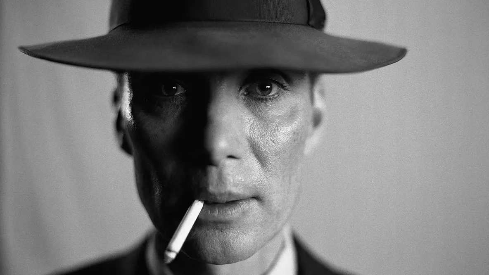

Oppenheimer,film del 2023 diretto da Christopher Nolan,è basato sulla biografia dello
scienziato Robert Oppenheimer,considerato il padre della bomba atomica,e sull’intero
progetto Manhattan attuato durante la seconda guerra mondiale.Il film è considerato
un’opera d’arte dall’aspetto contraddittorio e dualistico,in quanto il protagonista può essere
considerato allo stesso tempo un eroe e un criminale
di guerra responsabile di una delle più grandi
tragedie dell’umanità che porterà poi l’uomo ad
interrogarsi sui limiti della scienza e del progresso.
Non è un film sulla Seconda guerra mondiale,tuttavia,
al fine di comprendere maggiormente cosa si sta
guardando,è utile fare chiarezza sul contesto storico.
Robert Oppenheimer (1904-1967) nasce a New York
da una famiglia di immigrati ebrei,e per questo
motivo osserva da subito con preoccupazione l’ascesa
di Hitler al potere,detentore di un potere totalitario
che mette a punto una politica razziale e
antisemita,che si esprimerà totalmente con le
emanazioni dei provvedimenti chiamati leggi di
Norimberga del 1935,che varranno poi come esempio
di leggi in difesa della razza,che prevedevano una garanzia nella preservazione della razza
ariana dal contatto,allontanando sempre di più il pericolo di contaminazione.Viene privata ai
cittadini ebrei integrati : la cittadinanza,le libertà dell’individuo con l’esclusione dagli
impegni pubblici ,la stigmatizzazione ,l’identificazione dell’ebreo con la stella gialla.Vengono
anche privati i matrimoni misti.

In questo scenario Oppenheimer inizia a sostenere organizzazioni antifasciste;gli Stati Uniti
entrano in guerra con l'ideale di combattere il nazifascismo,di uscire dalla crisi economica
del 29 dopo il burrascoso calo delle borse,che gli spinse ad isolarsi,e contemporaneamente
erano anche preoccupati che per il Pacifico andasse ad espandersi il progetto imperialista del
Giappone.Si osserva dunque un avvicinamento di Oppenheimer nei confronti della politica
Russa,che però svanirà presto con l’ascesa al potere di Stalin,che sarà il primo a muoversi
dopo un primo periodo di “guerra falsa (1939-1940)” (in quanto non ci sono sconti
diretti),con i suoi obiettivi di occupazione che riguardano l’Estonia,la Lituania e la Lettonia.
Punta inoltre anche a territori come la Norvegia e la Finlandia perché strategici.
Non appoggiando questa politica colonialista si orienta verso un approccio più
liberal-democratico.Pur essendo una grande mente dell’epoca, questo periodo di scoperta
politica portò il suo nome nelle liste di persone sospette dell’FBI.
Il progetto Manhattan è nato per l’esattezza nel 1939, con pochi mezzi e poche risorse, ma il
lancio vero e proprio del programma è stato nell’autunno del 1942, quando il team contava
quasi 130mila persone e aveva un budget di circa 2 miliardi di dollari americani.
Tutta questa fretta è dovuta ad un cambio drastico dello scenario politico nel dicembre del
1941,con l’attacco giapponese alla base di Pearl Harbor e la conseguente entrata in guerra
degli Stati Uniti.Dopo questo evento viene dato il via al progetto Manhattan ,affidando la
gestione militare al generale Leslie Groves e quella scientifica al chimico nucleare Harold
Urey.
Vennero incrementate le risorse umane ed economiche destinate alle ricerche sulla fissione
nucleare: dai 6000 dollari iniziali si passò allo stanziamento di 2 miliardi di dollari,e nel
corso degli anni tra il 1942 e il 1945,vennero coinvolte nel progetto oltre 130.000 persone.
Circa il 90% dei fondi fu utilizzato per il reperimento del materiale radioattivo e per la
costruzione di circa 20 laboratori diversi su tutto il territorio americano.
Quella di Los Alamos è la storia più buia e controversa della storia della scienza.Nel 1942
tutto sembrava volgere in favore dei nazisti,dunque era necessario che il governo americano
spingesse al fine di aumentare le risorse del progetto.
Erano presenti tutti i più grandi scienziati del tempo,da Niels Bohr,uno dei padri fondatori
della meccanica quantistica,a John Von Neumann,pioniere dell’informatica moderna,Enrico
Fermi,pilastro della fisica in Italia.
La prima bomba atomica ad aver mai squarciato i cieli del mondo è caduta in New Mexico,
nel deserto della Jornada del Muerto. Si chiamava “the Gadget”: era il 16 luglio 1945, il
giorno del Trinity test.
L’esperimento durò 28 minuti,e viene considerato l’inizio dell’era atomica.
Il 6 agosto 1945, la prima bomba atomica a scopo offensivo fu sganciata sulla città
giapponese di Hiroshima. La seconda, al plutonio, è stata sganciata tre giorni dopo su
Nagasaki.